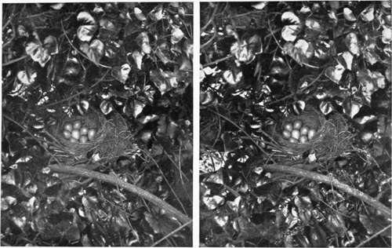

Birds And Their Nests And Eggs. Part 13
Description
This section is from the book "Nature Photography For Beginners", by E. J. Bedford. Also available from Amazon: Nature Photography for Beginners.
Birds And Their Nests And Eggs. Part 13
Now bring the steps along and we can arrange the camera on stilts again, as we did in the case of the Missel Thrush. It is a good thing there is no wind, because the slightest breeze would cause the branch containing the nest to vibrate and make it impossible to get a sharp image. The nest literally rocks in a breeze like a little cradle. Now you can get on the steps and focus the subject. I have moved away one or two pieces of the branch so as to show more of the nest, which is almost hidden in its natural position. These can be replaced after you have exposed your plate. I should, in fact, expose two plates on the nest, as it is not often found here, and it would be a pity not to secure a good photograph of this one in case we do not find another. Now replace the branches covering the nest and expose another plate from the same position, as you have plenty to-day. Then we will take off the additional legs of the tripod and obtain a view of the tree containing the nest from a short distance away. This will make an interesting series, and I hope the plates will turn out successfully. Perhaps you would not mind taking the steps back to the house now, and I will sit down and wait for you here and watch the little Gold-crests during your absence.
You have not been long. I have been watching the cock bird making several visits to the nest, evidently for the purpose of feeding his sitting mate, and have also heard his very soft but joyous little song. You had better sit down for a few minutes, as you must be getting tired; and you can watch for a short time. Look! there he is suspended in the air while his wings are rapidly vibrating, and he is catching the small winged insects flying round the branches near his nest. I am glad you have had a good view of my little favourite.
We had better be moving on now towards the keeper's cottage; all our other subjects are on the road thither. We shall see a Skylark's nest with four eggs near the middle of the next field—at least, I hope so.
Yes, here it is, I saw the bird fly off as we approached. The nest and eggs are almost concealed by the tuft of grass it is built under. But being on the ground it is easier to get at than the nest of the Gold-crest we have just left. This is, however, not so beautifully constructed as the latter, but perhaps you remember the lines of the poet Grahame, in his Birds of Scotland. Referring to the Skylark, he says:—
Thou, simple bird Of all the vocal quire, dwellest in a home The humblest; yet thy morning song ascends Nearest to heaven.
I hope we shall be able to get a photograph of the young Skylarks when hatched. They are rather curious and look very much like bits of dried grass when lying in the nest. The young of birds of this kind are not very pretty compared with a young chicken or Lapwing, or any bird which is able to look after itself soon after being hatched. Notice the colour of these eggs. The greenish-brown spots almost cover the dirty-white ground colour, and remind one of some of the darker specimens of House Sparrow's eggs, although those of the Skylark are larger, and this latter fact helps to distinguish them from the eggs of the Meadow Pipit, which builds its nest in similar situations. The nest of the latter is rather better constructed and is generally deeper than that of the Skylark.
Our next two subjects are close to the keeper's cottage, and the first will be the Bullfinch's nest, not far from the back door. I am afraid this bird is greatly persecuted and often shot, owing to the notion that it damages the buds of fruit trees. Well, personally, I must admit I would rather have a few buds damaged, even if they were in my own garden, than lose the Bullfinch altogether, for he is one of our handsomest birds. His velvety-black head and bright tile-red breast, coupled with the slaty colour of his back give him a very smart appearance, and I am glad to find he is commoner than he used to be, thanks to the Bird Protection Laws now in force. This bird was often caught and blinded to make him learn to pipe better, and it is to be hoped that such cruel practices as this may—if they have not already—speedily become a thing of the past. The nest is quite distinctive in character, and I do not know any other with which it is likely to be confused. It is usually built of small dark twigs bound together with roots, and lined with finer rootlets. Sometimes a little wool is used also, and the nest always has a flat appearance, the outer twigs projecting some distance from the cup. The eggs vary in number from four to six, and the ground colour is a bright greenish-blue not quite so dark as that of the eggs of the Hedge Sparrow, spotted and streaked with dark purplish-brown, with sometimes a few lighter spots of a similar colour. The markings are generally more numerous at the larger end, but I have occasionally found this reversed.
There are several nests of the Wild Duck or Mallard round the pond by the cottage. Some of the Ducks are fairly tame and probably you will be able to get a photograph of one on her nest. Here is a nest, but the bird is not at home. See, she has covered the eggs over with the down forming the lining round the edge of the nest, which she plucks from her breast for the purpose. She folds this down over her eggs with her bill, in a somewhat similar way to the folding over of a hinge, when she leaves the nest of her own accord. You had better expose one plate on this nest and we will have a look at the others before exposing another one. Ah! here is a Duck on her nest and she seems sitting very close; she will probably hatch out in the course of a few days. You had better use the single combination of your lens again for this subject. Go very steadily, as you did when taking the Pheasant on her nest, and I think you will be successful.
Fig. 61. Blackbird's Nest with 8 eggs.
As you have succeeded in getting a picture of this Duck on her nest, we will now return to the other nest, and I will fold back the down covering the eggs, so that they can be seen, and you can then make another exposure on them. There are fourteen, and see how nicely they are packed together so that she can cover them well. The positions are, of course, changed, those on the outside are brought in their turn to the centre, so that all get an equal amount of warmth. If we could only see her, when they are all hatched, leading the young birds down to have their first swim, we should feel, I am sure, what a proud mother she was. We are both ready for tea now, and the days are lengthening so that the light will remain good for quite two hours after we have finished the meal.
We have enjoyed our tea. How refreshing a cup of it seems when one is tired; I think there is nothing like it. We will now walk leisurely down to the churchyard to find the Partridge's nest. It is under a seat and contains the large number of twenty-two eggs. Unfortunately, it has been forsaken by the bird. I am afraid the reason was that the choir-boys found it out and paid so many visits that the bird was worried too much, but the eggs were still there when I looked two days ago. You can expose two plates on this subject, one before the grass is moved away and another after it has been moved, showing the eggs, or at least some of them. You will not be able to show the whole twenty-two, but I have counted them and they are all there. Notice how they are piled one on the other; I should fancy it would be impossible for the bird to cover them all properly, and some would almost certainly have been addled had the bird not forsaken them. The Partridge, however, is able to puff out her feathers to a considerable extent, as you may imagine, when she can shelter and conceal more than a dozen chicks under her.
That makes the number of plates exposed sixteen, and you have two left for any subject which may turn up before we leave to catch our train for the return journey. Although you have not exposed a large number of plates, you have obtained nine different kinds of nests, and in addition several different views of some of these. There will not be many occasions when you can expect to exceed this number in the course of a single outing. I should not attempt to develop your exposures to-night as you are tired, I know, and will get better results when you are fresh, so leave them until tomorrow evening.
Continue to:
- prev: Birds And Their Nests And Eggs. Part 12
- Table of Contents
- next: Chapter XI. How To Observe And Photograph Some Of Our Commoner Birds And Their Nests And Eggs. Part 14
Tags
nature, photography, art, birds, camera